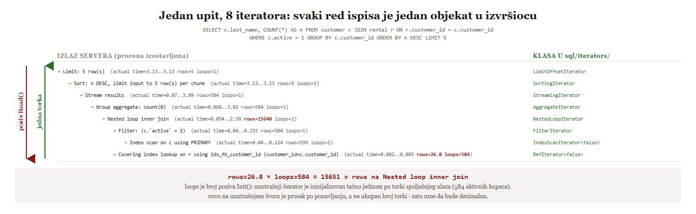

examples/05-model-iteratora/02-pipeline-i-blokada.sql, izmereno na MySQL 8.4.11).Lekcija 07 · Poglavlje 5 (Model iteratora i pipeline operatora)
Lekcija 4b je merila iteratore ne objasnivši šta su. Lekcija 4c je pokazala da se
trag optimizatora završava na join_optimization, a da je join_execution
prazan. Pitanje „šta se zapravo izvršava" odloženo je dva puta. Ovde se zatvara.
FORMAT=TREE
ispisa kažeš koja se C++ klasa iteratora iza njega instancira i ko koga poziva;
(2) da objasniš šta loops broji i zašto je rows na
unutrašnjem čvoru decimalan broj; (3) da na osnovu vremena do prve torke prepoznaš
koji operator blokira pipeline, i da izvedeš zašto isti sken uz isti LIMIT jednom
pročita deset torki a drugi put pet miliona.
Model iteratora (iterator model) nije MySQL-ov izum. Potiče iz sistema Volcano, opisanog u radu koji je Goetz Graefe objavio 1994. godine, i danas je podrazumevani oblik izvršioca u većini relacionih baza. MySQL ga je uveo radnim zadatkom WL#11785, u čijem obrazloženju doslovno stoji:
Pre toga je MySQL imao šest različitih, međusobno nespojivih apstrakcija za
čitanje torki (QUICK_SELECT_I, READ_RECORD, QEP_TAB,
QEP_operation, QEP_TAB::next_select, Query_result). Zamenila
ih je jedna klasa. U izvornom kodu verzije 8.4 ona izgleda ovako:
Init() | „Initialize or reinitialize the iterator. You must always call
Init() before trying a Read()." Ponovni poziv premotava iterator na
početak. |
Read() | Vraća jednu torku. Povratna vrednost je
0 (u redu), -1 (nema više torki) ili 1 (greška). |
UnlockRow() | „If Read() returned a row that you did not
actually use, you should call UnlockRow() afterwards." Otpušta zaključavanje nad
torkom koja je pročitana pa odbačena. |
Dve stvari koje se lako promaše. Prva: torka se ne vraća kao rezultat
funkcije. Zaglavlje kaže „The row data is not actually returned from the function; it is put
in the table's (or tables', in case of a join) record buffer, ie., table->records[0]."
Volcano daje MySQL-u oblik toka upravljanja (otvori, čitaj, zatvori), ali torke i dalje
putuju kroz postojeći bafer torke (record buffer), a ne kroz povratne
vrednosti. Druga: iterator sme da čita iz drugog iteratora. Zbog toga se od njih pravi
stablo, a ne lanac.
TABLE, such as which columns to read
(the read_set)." Vredi zapamtiti za odbranu — nije reč o čistom udžbeničkom Volcano
modelu, nego o Volcano obliku koji je postavljen preko starijih MySQL konvencija.
FORMAT=TREE ispisa je jedan iteratorU poglavlju 4 je FORMAT=TREE predstavljen kao „drugi oblik ispisa". To je bilo tačno
ali nedovoljno. Priručnik kaže šta su ti čvorovi:
Uvlačenje je odnos roditelj-dete: dublje uvučen čvor je dete. Roditelj
poziva Read() deteta, dete vraća jednu torku roditelju. Zato se stablo čita
od najdubljeg reda naviše kad te zanima odakle podaci dolaze, a
odozgo nadole kad te zanima ko koga poziva.
Preduslov: baza sakila, sa podrazumevanim indeksima. Ništa
se ne menja, pa nema šta da se čisti posle.
USE sakila; -- Prvo oblik stabla, bez izvrsavanja. EXPLAIN FORMAT=TREE SELECT c.last_name, COUNT(*) AS n FROM customer c JOIN rental r ON r.customer_id = c.customer_id WHERE c.active = 1 GROUP BY c.customer_id ORDER BY n DESC LIMIT 5; -- Zatim isto stablo, ali sa merenjem po iteratoru. EXPLAIN ANALYZE SELECT c.last_name, COUNT(*) AS n FROM customer c JOIN rental r ON r.customer_id = c.customer_id WHERE c.active = 1 GROUP BY c.customer_id ORDER BY n DESC LIMIT 5;
Osam uvucenih redova. Odozgo nadole: Limit, Sort, Stream results, Group aggregate, Nested loop inner join, pa dva ulaza spoja -- Filter nad Index scan-om po tabeli customer, i Covering index lookup po tabeli rental. Vremena i broj torki se menjaju od pokretanja do pokretanja; oblik stabla se ne menja.
Kako se ovo čita: to nije osam koraka koje server izvodi jedan za
drugim. To je osam objekata koji istovremeno postoje u memoriji, spojenih tako da najgornji
(Limit) poziva sledeći, i tako do najdubljeg, koji jedini stvarno dodiruje
tabelu preko handler API-ja iz poglavlja 2.

i RefIteratorRead()), torke idu nagore, po jedna
(examples/05-model-iteratora/01-stablo-iteratora.sql, izmereno na MySQL 8.4.11).Preslikavanje nije analogija nego mehanika. Tekst koji FORMAT=TREE ispisuje generiše
se u sql/join_optimizer/explain_access_path.cc, a iterator se pravi u
sql/join_optimizer/access_path.cc — obe datoteke se granaju po istom polju
path->type. Zato svakom ispisu odgovara tačno jedna klasa:
Table scan on … | TableScanIterator |
Index scan on … / Covering index scan on … | IndexScanIterator<false>, a <true> kad se indeks čita unatrag |
Index lookup on … / Covering index lookup on … | RefIterator<false> |
Single-row index lookup on … | EQRefIterator |
Filter: … | FilterIterator |
Sort: … | SortingIterator |
Limit: N row(s) | LimitOffsetIterator |
Group aggregate: … / Aggregate: … | AggregateIterator |
Nested loop <tip> join | NestedLoopIterator |
Inner hash join … | HashJoinIterator |
Stream results | StreamingIterator |
Materialize | gradnja privremene tabele, slučaj MATERIALIZE |
-> Hash, koji se pojavljuje iznad ulaza hash spoja, nije
iterator. U izvornom kodu to je natpis na grani ka ulazu koji se hešira:
children->push_back({path->hash_join().inner, "Hash"});. Prepoznaje se i bez
koda — jedini je red u stablu bez ijednog broja uz sebe, jer iza njega ne
stoji ni AccessPath struktura čija bi se cena procenila, ni iterator čije bi se vreme
merilo.
loops je broj poziva Init()Lekcija 4b je uvela loops kao „broj ponavljanja" i zaustavila se tu. Izvorni kod
kaže tačno šta se broji, u klasi koja postoji isključivo da bi EXPLAIN ANALYZE imao
odakle da čita:
Time se dve stvari koje su do sada bile pravila pretvaraju u posledice. Prvo:
NestedLoopIterator za svaku torku spoljašnjeg ulaza pozove Init() pa
Read() na unutrašnjem ulazu. Zato je loops na unutrašnjem čvoru jednak
broju torki koje je izbacio spoljašnji čvor — u primeru iznad, tačno broju aktivnih kupaca. Drugo:
pošto se merenja sabiraju kroz sva ponavljanja a prikazuju kao prosek,
rows na unutrašnjem čvoru je prosek po ponavljanju i zato sme da
bude decimalan. Ukupan broj torki koje spoj vidi dobija se množenjem:
rows=26.8 x loops=584 =~ 15651 = rows na "Nested loop inner join"
Init() na unutrašnjem ulazu ne znači uvek novo čitanje sa diska — EQRefIterator
pamti poslednji pročitani ključ i preskače ponovni pristup. Za poglavlje 5 dovoljno je znati da se
loops broji na nivou poziva, a ne na nivou U/I operacija.
Ako svaka torka nastaje tek kad je neko zatraži, onda nijedan operator ne zna unapred koliko će
torki proizvesti — prestaje da radi onda kada ga prestanu pozivati. To je
izvršavanje na zahtev (demand-driven), i najlakše se dokazuje jednim
LIMIT-om nad velikom tabelom.
Ali ne mogu svi operatori da rade tako. SortingIterator ne može da vrati prvu torku
dok nije video sve torke svog deteta, jer dok ne vidi poslednju ne zna koja je
prva po redosledu. Takav operator je blokirajući operator
(blocking operator): on pipeline preseca na dva dela.
Preduslov: baza obrada_upita i tabela
wide_events sa pet miliona torki, iz examples/00-setup/. Upiti samo
čitaju.
USE obrada_upita; -- A: ceo plan je pipeline. EXPLAIN ANALYZE SELECT id, amount FROM wide_events WHERE amount > 100 LIMIT 10; -- B: ista tabela, isti uslov, isti LIMIT, plus ORDER BY. EXPLAIN ANALYZE SELECT id, amount FROM wide_events WHERE amount > 100 ORDER BY amount LIMIT 10;
A: tri cvora (Limit, Filter, Table scan). Na sva tri stoji rows=10. Ukupno vreme je nekoliko milisekundi. B: cetiri cvora -- isti kao u A, plus Sort izmedju Limit-a i Filter-a. Na skenu tabele sada stoji rows=5e+6, a ukupno vreme je oko dve sekunde. Apsolutne vrednosti zavise od stanja bafer-pula; odnos ne zavisi.
Kako se ovo čita: sken tabele ne zna ništa o
LIMIT-u. On nije „optimizovan da stane"; on jednostavno prestaje da bude
pozivan čim LIMIT dobije svojih deset torki. Kad se između njih ubaci
Sort, Sort mora da isprazni ceo svoj ulaz pre nego što vrati bilo
šta, pa se isti sken izvrši do kraja. Jedna klauzula, ista tabela, pet miliona pročitanih
torki umesto deset.
examples/05-model-iteratora/02-pipeline-i-blokada.sql, izmereno na MySQL 8.4.11).Slika 5.2 pokazuje i kako se blokada prepoznaje bez ikakvog poznavanja operatora. Priručnik kaže
da EXPLAIN ANALYZE po iteratoru prijavljuje „Time to return first row" i „Time spent
executing this iterator", što je ono što se u ispisu vidi kao actual time=prvo..poslednje.
Odatle sledi pravilo koje vredi zapamtiti:
| prvo << poslednje | pipeline operator: torke izlaze postepeno, kako
pristižu. U panelu B tako izgleda Filter. |
| prvo = poslednje | blokirajući operator: ništa nije izašlo dok sve nije ušlo.
U panelu B tako izgleda Sort. |
Koji operatori blokiraju, a koji ne:
| pipeline | Table scan, Index scan, Index lookup,
Filter, Limit, Nested loop join, Stream results |
| blokira | Sort (ceo ulaz), Materialize (cela privremena
tabela), Aggregate using temporary table, i faza gradnje hash
spoja — ulaz ispod natpisa Hash mora ceo da se pročita pre nego što išta izađe |
Stream results uopšte postoji kao čvor. On je upravo
suprotnost materijalizaciji: rezultat se šalje klijentu kako nastaje, umesto da se prvo skupi u
privremenu tabelu. U stablu je to znak da na tom mestu nije ubačena barijera.
AccessPath je plan, iterator je izvršavanjeOstaje pitanje odakle iteratori dolaze. Između planera iz poglavlja 3 i izvršioca stoji struktura
AccessPath, a njeno zaglavlje taj odnos iskazuje u jednoj rečenici:
Optimizator, dakle, ne pravi iteratore. On pravi stablo AccessPath struktura, koje su
namerno male i fiksne veličine baš zato da bi jedna mogla da se zameni boljom tokom
pretrage bez nove alokacije. Tek na kraju funkcija CreateIteratorFromAccessPath()
prevodi to stablo u stablo iteratora.
join_optimization, a
join_execution je bio prazan. Sad se vidi zašto: u izvršavanju se ne
donosi nijedna odluka koju bi trag imao da zabeleži. Sve je odlučeno u trenutku kad je
stablo AccessPath struktura bilo gotovo; posle toga se ono samo prepiše u objekte i
pokrene.
Zato treba paziti na jednu zamku u terminologiji ovog rada: AccessPath je
C++ struktura, dok je pristupni put pojam iz poglavlja 1 i 3 (način
na koji se dolazi do torki jedne tabele). Nisu isto i ne smeju se zameniti.
Po jedno pitanje na svaku netrivijalnu tvrdnju lekcije. Odgovor se ocenjuje odmah, sa obrazloženjem.
1. Šta Read() vraća pozivaocu kad uspešno pročita torku?
Zaglavlje je izričito: torka se stavlja u table->records[0], a
povratna vrednost je samo status (0, -1 ili 1).
2. U FORMAT=TREE ispisu, šta znači dublje uvučen red?
Uvlačenje je struktura stabla, ne redosled u vremenu: roditelj poziva
Read() deteta, a svi čvorovi postoje istovremeno.
3. Šta broji loops na jednom čvoru?
IteratorProfiler::GetNumInitCalls() to kaže doslovno; kod ugnježdene
petlje to je jednom po torki spoljašnjeg ulaza.
4. Zašto rows na unutrašnjem ulazu spoja ume da bude decimalan?
Merenja se sabiraju preko svih ponavljanja a prikazuju po ponavljanju; ukupno se
dobija kao rows puta loops.
5. Zašto sken tabele u upitu A pročita samo desetak torki?
Sken ne zna za LIMIT. Rano zaustavljanje je posledica toga što se
torke povlače na zahtev, a zahteva više nema.
6. Po čemu se u ispisu prepoznaje blokirajući operator?
Ništa nije izašlo dok sve nije ušlo, pa se raspon
actual time=prvo..poslednje skuplja u jednu vrednost.
7. Koji od ovih redova u stablu nije iterator?
To je natpis na grani ka ulazu koji se hešira; prepoznaje se po tome što je jedini red bez ijednog broja uz sebe.
8. U kakvom su odnosu AccessPath i iterator?
Zaglavlje access_path.h kaže „correspond 1:1 to iterators"; razlika
je što put nosi i cenu, koja posle planiranja više nikom ne treba.
9. Zašto je faza join_execution u tragu optimizatora prazna?
Sve je odlučeno dok je nastajalo stablo AccessPath struktura; posle
se ono samo prepiše u objekte i pokrene.
Rezultat: 0 / 0